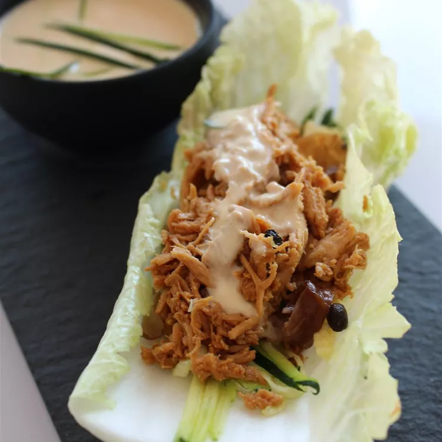

Easy Chicken Lettuce Wrap

Description
Ingredients
- 1 deli-roasted chicken, meat removed and shredded
- ½ cup shredded carrots
- ½ cup chopped water chestnuts
- ⅓ cup Asian-style salad dressing
- ¼ cup plain Greek yogurt
- 1 pinch red pepper flakes, or to taste (Optional)
- 1 head Boston lettuce leave
Steps
- Mix chicken, carrots, and water chestnuts together in a large bowl.
- Stir salad dressing and yogurt together in a separate bowl until smooth; pour over the chicken mixture and toss to coat.
- Spoon chicken mixture into lettuce leaves. Season with red pepper flakes.